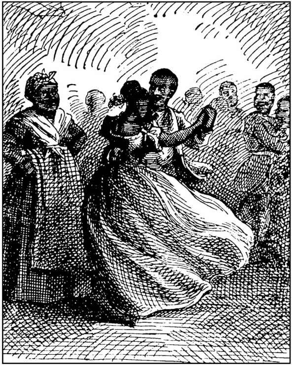

（逐字逐句记述我的亲耳所闻）
那是一个夏日黄昏。我们都坐在小山顶上那幢农庄住宅的阳台上，“雷切尔大婶 ”却循规蹈矩地坐在比我们低一层的台阶上——原来，她是我们的女仆，而且是一个黑人。她身材粗壮高大，已经六十岁了，但她的眼睛仍未昏花，气力仍未衰退。她是一个快乐而又热情的人，你可以毫不费力引得她纵声大笑，比你逗一只鸟儿唱歌还容易。现在，像往常一样，一天的工作做完了，她在炮火下接受挑战的时刻到了。我的意思是说，她会受到人们无情的打趣，而她却引以为乐。她会一阵又一阵地呵呵大笑，然后坐在那儿，双手捧着脸，乐得浑身直颤抖，说话时喘得透不过气来。每逢这种时刻，我就会想到这一问题，我说：
“雷切尔大婶 ，你怎么会活到了六十岁，从来没遇到一点儿烦恼的事？”
她不再颤抖了。她停下来，沉默了一会儿。然后她向我扭转了头，说话的口气里没有丝毫笑意：
“C先生——你这是在认真地问我吗？”
这使我感到很惊讶，而且使我的态度和我的问话也显得严肃了，我说：
“啊，我想——我意思是要问——啊，你不可能遇到过什么烦恼的事，我从来不曾听到你唉声叹气，从来不曾看到你眼睛不含笑意。”
这时她转过脸来，正对着我，那完全是一副严肃认真的神气。
“我遇到过什么烦恼的事吗？C先生，我这就说给你听听，然后再让你自己去想想吧。我出生在一伙奴隶当中；我知道一切有关奴隶的生活，因为我本人就是他们当中的一个。再说，先生，我的老头子——也就是说，我的汉子——他疼爱我，就像你疼你的老婆那样。我们有孩子——有七个孩子——我们爱那些孩子，就像你爱你的孩子那样。他们都是黑皮肤，可是，上帝无论让孩子长得有多么黑，做妈妈的仍旧爱他们，不舍得丢了他们，无论如何也舍不得呀。
“再说，先生，我是在老福金尼[1]长大的，可是我妈是在马里兰州长大的；哎呀呀！要是你一招恼了她，那她可真够厉害的！我的天哪！她会闹得天翻地覆！只要一发火，她就老是说她惯说的那句话。她总是把身体挺直了，把捏紧了的拳头往腰里一叉，说：‘我要叫你们知道，我不是出生在什么下流的地方，可不能受你们这伙贱货的欺负！我是一个老兰母鸡的小雏儿，我就是的！’你瞧，原来出生在马里兰的人就是那样称呼他们自己，并且为这感到自豪。可不是，她就是那样说的，我永远不会忘记，因为她老是那样说，因为有一天她也是那样说，因为那一天小亨利摔坏了手腕子，碰破了脑袋，就在脑门子上面，可是那些黑人谁也不赶过来照料他。等他们跟她顶嘴时，她可火了，她说：‘你们可得当心点儿！’她说：‘我要你们这伙黑人知道，我不是出生在那些下流的地方，不是好让你们这伙贱货欺负的！我是一个老兰母鸡的小雏儿，我就是！’随后她就收拾好了那厨房，亲自包扎好了孩子的伤口。所以，我如果被招恼了，也总是说那几句话。

“再说，又过了一些时候，我的老女主人说她破产了，只好把所有的黑人都就地给卖了。我一听说要把我们所有人都在里士满拍卖，咳，我就知道事情要坏！”
雷切尔大婶随着话题越谈越激动，身体也越挺越直，这会儿她高耸在我们面前，星光衬托出她那一片黑影。
“他们给我们套上了锁链，让我站在一个和这个阳台一般高的平台上——有二十尺高——所有的人站在四周围，人山人海的。他们走上来，对我们浑身仔细地察看、拧拧我们的胳膊，叫我们站起来走上几步，然后说：‘这一个太老了。’或者说：‘这一个腿瘸了。’或者说：‘这一个不顶用。’他们卖了我的老头子，把他带走了，他们开始卖我的孩子，也把他们带走了，我就大哭起来；那个人说：‘闭起你那张哇啦哇啦哭的臭嘴。’说着就伸出手来打了我一个嘴巴。等到所有的人都被卖完，只剩下了我的小亨利，我就把他紧搂在怀里，挺直了身子说：‘你们可不能把他带走。’我说：‘谁敢碰一碰他，我就杀了他。’可是我的小亨利悄声对我说：‘我会逃走的，我去找工作，然后给你赎身。’哦，求老天保佑这孩子吧，他的心总是这样善良的！可是他们抓住他——他们抓住他，那些人抓住了他；可是我揪住他们的衣服，把衣服扯得粉碎，还用我的锁链砸他们的脑袋；他们也揍了我，可是我不理会那些。
“再说，我的老头子就那样被带走了，再有我所有的孩子，我所有的七个孩子——其中六个我直到今天也没再见到，算到上一个复活节为止，已经有二十二个年头了。买我的那个人住在新伯恩，所以他就把我带到了那里。再说，又过了几年，打起仗来了。我的主人是南方军队里的一个上校，我做了他家里的厨娘。所以，后来北方军队占领了那座城市，他们就一起逃走，把我和其他几个黑人留在那幢怪大怪大的大房子里。所以，后来那些北方的大军官就搬到那里面去住，他们问我可愿意给他们做饭。‘我的天哪，’我说，‘那正是我的本行嘛。’
“他们可不是一些小军官，你要知道，他们都是最大最大的军官；他们老是把那些兵吆来喝去！那将军叫我掌管厨房；他说：‘如果有谁来找你麻烦，你就把他轰出去；你不用害怕。’他说：‘现在你是和你的朋友在一起。’
“再说，我心里想，如果我的小亨利能找到机会逃走，那他肯定是逃到北面去了。所以，有一天我就跑到客厅里那些大军官待的地方，向他们这样行了一个屈膝礼，然后站好了，把我亨利的事告诉了他们。他们留心地听着我诉说苦衷，就好像我是一个白人似的；我说：‘我来求你们，是因为，如果他已经逃走，到了北边，你们各位先生是打那边来的，也许见到过他，可以告诉我怎样才能再找到他；他人很小，左手腕子上有一个疤，脑门子上边也有一个疤。’他们听了都为我难过，那将军说：‘你丢了他有多久了？’我说：‘有十三年了。’这时候将军就说：‘现在他不会是那样小了——他已经是大人了！’
“以前我就从来没有想到这一点！我仍旧觉得他还是一个小孩儿哩。我从来没想到他会长大起来，现在已经成人啦。可是现在我明白了。那几位先生，谁也没有遇见他，所以他们都没法帮助我。在整个那段时间里，只有我不知道他的情形，其实我的亨利已经逃到北边去，许多年来，他一直在当理发匠，干活儿养活自己。过了一些时候，打起仗来，他就兴奋了，说：‘我不再干剃头的这一行了。’他说：‘我要去找到我的老妈妈，除非是她已经死了。’他就卖了他的家伙，到招兵站那里去，让那上校雇了去当用人；后来他就去所有打仗的地方，去找他的老妈妈；可不是吗！说真的，他先去给这一个军官当用人，再去给另一个军官当用人，说他要找遍南边所有的地方；可是你瞧，我当时对这些事一点儿也不知道。可你叫我又怎么会知道呢？
“再说，有一天晚上，我们那里开了一个大的军人舞会；新伯恩那儿的兵总是要开舞会，热闹个没完。有好多次，他们都在我的厨房里跳，因为那地方是那样大。你听我说，我对这种事就是看不上眼，因为我那地方是给军官们用的，这伙普通的兵在我厨房里那样乱蹦乱跳，可把我给招恼了。可是，我总是站在一旁不去管，让他们继续跳下去，我就是那样；有时候，他们实在把我招恼了，我就叫他们去收拾那厨房，我可是说一是一说二是二的！
“再说，一天晚上——那是一个星期五晚上——来了整整一个排，他们是保卫这幢房子的黑人兵团的一部分——你瞧，这房子就是司令部——后来，我也兴致来了！疯了吗？我就是那样高兴！我转来转去，转来转去；我只是脚痒痒得想要他们带着我跳。他们转着圈儿，不停地跳！啊呀！他们快活极了。我只是转呀，转呀！过了不多一会儿，有那么一个打扮得漂漂亮亮的黑人年轻小伙子，搂着一个黄毛丫头，那么轻松地向屋子这面跳过来；他们一圈圈地转呀转呀，看着他们那副样子，真会叫你像喝了酒那样醉倒；再说，等他跳得和我并齐的时候，他们俩有点儿像是在平衡身体，先是单用这一条腿站着，接着是单用那一条腿站着，笑着瞧我那条大红头巾，跟我开玩笑。这一来我可火了，我说：‘给我滚开！——你们这些贱货！’突然间，就在那一刹那，那年轻人好像脸色变了，但是接着他又笑了，又像刚才那样了。再说，大约就在这个时候，来了乐队里几个奏乐的黑人，这些人不论去到哪里，总要装出那么一副神气活现的样子。那天晚上，他们正要卖弄自己，我就故意去招惹他们！他们哈哈大笑，这一来我就发火了。其他的几个黑人也开始大笑，这一来我精神猛地一振，我可是真的火了！我眼睛里闪出光亮！我挺直了腰板——就像我现在这样，头一直顶向天花板，几乎顶到了天花板——我把握紧的拳头向腰里一叉，说道：‘你们要当心点儿。’我还说：‘我要你们这伙黑鬼明白，我不是出生在下流的地方，好让你们这伙贱货开玩笑！我是一个老兰母鸡的小雏儿，我就是！’这时候，只见那个年轻人站在那里直僵僵的瞪着眼，好像向上瞅着天花板，好像忘记了一件什么事，一时回想不起来。再说，那时我就大踏步向那些黑人走过去——就这样，像是一位将军——他们就在我前面躲开，都逃到门外面去。那个年轻人走出去的时候，我只听见他跟另一个黑人说话，‘吉姆，’他说，‘你去关照头头儿，说我明天早晨大约八点钟上班；我有一些事要核计，’他说，‘今天夜里我不回去睡了。你去吧，’他说，‘让我一个人留在这里吧。’
“那时候大约是夜里一点。再说，大约到了七点，我起来干活儿，给军官们做早饭。我正在火炉前蹲下——就像这样，比如你的脚就是那炉子吧——我用我的右手开了炉门——就像这样，再把它这样向回推，就像我这会儿推你的脚——我手里端着那盘热腾腾的小圆饼，刚要往起站，这时候只见一张黑脸从下面凑近我的脸，一双眼睛向上冲着我的眼睛瞧，就像我这会儿从下面凑近你的脸瞧；我就僵在那里，一动也不动！就那样一直紧盯着他瞅；那盘子抖动起来，突然，我明白了！盘子掉在地上，我一把抓住他的左手，捋起他的袖子——就这样，就像我这样捋你的袖子——接着我又去察看他的脑门子，把他的头发这样向上一撩，哎呀，‘孩子呀！’我说，‘你要不是我的亨利，你手腕上哪来的这个疤痕，脑门子上边哪来的这个疤印呀？感谢老天爷，我又见到我的亲人啦！’
“啊呀，C先生，当然不能说，我从来不曾遇到过什么烦恼的事。也不曾有过什么快活的事！”
一八七四年
注 释
[1] 指美国弗吉尼亚州。